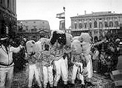

 Fiume - A Carnevale nel Quarnero si è sul col morale. Questo detto di nuovo conio apparirà anche banale, ma dà l'idea di come i quarnerini celebrino il periodo più pazzo e burlesco dell'anno. E non c’è crisi economica che possa frenare le mattane carnascialesche che già oggi conosceranno l’esordio in regione. Infatti per l’Epifania (ore 15) si daranno appuntamento nella località di Žejane, nella Ciciaria, la Compagnia teatrale popolare di Castua, la Kumpanija di Albona e i Krimejski festari di Fiume. Gli Žejanski zvončari, o scampanatori, daranno spettacolo nel centro di questa località, con una sfilata che sicuramente entusiasmerà i presenti. Non mancherà la distribuzione di minestra e vino brulè, grazie alla Comunità locale di Žejane. È proprio in questo villaggio della Ciciaria che gli scampanatori annunciano col loro assordante procedere l’arrivo del periodo sicuramente più allegro e spensierato.
L'area liburnica, ossia Abbazia e dintorni, avrà il suo primo fremito carnevalesco il 10 febbraio a Veli Brgud, con un grande raduno di persone in maschera. Una settimana più tardi è in programma la sfilata di Abbazia, con la partecipazione di circa 3 mila maschere e diversi carri allegorici. Dal 23 al 25 febbraio si terrà invece la regata velica abbaziana Carneval cup, mentre il 24 febbraio è prevista a Mattuglie la sesta Rassegna regionale degli zvončari, alla quale parteciperanno anche gli scampanatori di Ptuj, in Slovenia.
Il clou del Carnevale in regione avrà per scenario il Corso fiumano dove domenica, 25 febbraio, avrà luogo la diciottesima edizione della sfilata fiumana. Anche quest'anno vi prenderanno parte più di 130 gruppi mascherati provenienti da più paesi d’Europa e del mondo, per un totale di almeno 8 mila partecipanti. Tempo permettendo, il maxi corteo dovrebbe venir seguito dai "soliti" 100 mila spettatori. Il giorno prima, al Palazzo del Governo, si svolgerà il ballo in maschera, al quale sono invitati ambasciatori e consoli accreditati in Croazia e le più alte cariche della municipalità, della Regione e dello Stato. Sempre a Fiume si disputerà l'ormai tradizionale rally automobilistico in maschera, con partenza dal capoluogo quarnerino, arrivo a Buccari e ritorno a Fiume.
L'ultima iniziativa è in calendario il 28 febbraio, mercoledì, quando a Draga di Moscheina Messer Carnevale verrà spedito in mare su di un razzo, quadretto tradizionale al quale assistono sempre migliaia di persone.
January 6, 2001
© 2001 Il Piccolo di Trieste